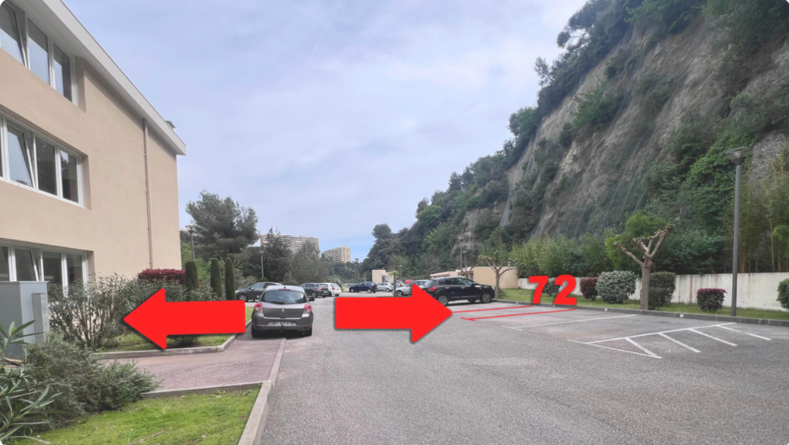
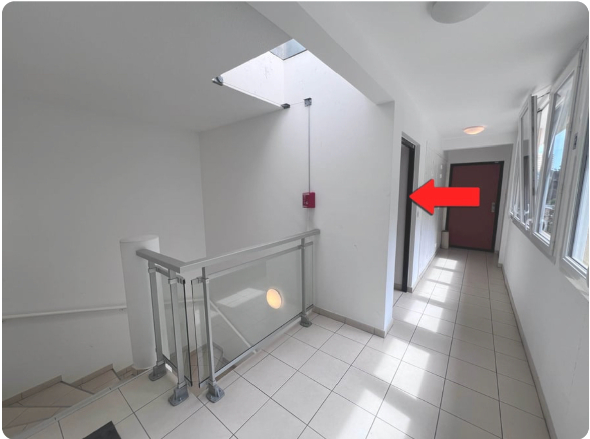

Le trousseau se compose d’une clé pour l’ouverture de la porte d’entrée de l’appartement ainsi qu’un badge noir qui ouvre :
Une place de parking privée N°72 se situe en face de l’entrée de l’immeuble.
Check-in : autonome à partir de 16h via la boîte à clés.
Check-out : avant 11h. Merci de replacer les clés dans la boîte à clés après votre départ.
Photo 1 : 1 -> Ouverture portail piéton avec badge noir — 2 -> Ouverture portail voiture
Photo 2 : Accès bâtiment D après la montée sur la gauche — Badge ou sonnette D32
Photo 3 : Appartement D32 — 2e étage — porte du milieu
Le local poubelle se trouve à l’entrée de la résidence. Il contient des bacs jaunes pour le tri des emballages.
Photo 4 : Local à droite de l’entrée